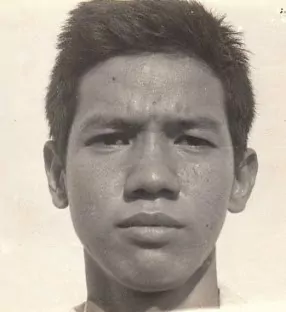

Abdul Haris Nasution
| Lahir | : | 17 Desember 1942 |
| Meninggal | : | 16 Desember 1969 (umur 26) |
| Sebab Meninggal | : | Menghirup gas beracun |
Soe merupakan seorang etnis Tionghoa yang menganut Katolik Roma. Leluhurnya berasal dari provinsi Hainan, Republik Rakyat Tiongkok. Ayahnya bernama Soe Lie Piet alias Salam Sutrawan. Ia anak keempat dari lima bersaudara di keluarganya; kakaknya Arief Budiman, seorang sosiolog dan dosen di Universitas Kristen Satya Wacana, juga cukup kritis dan vokal dalam politik Indonesia.
Kehidupan Saat Masa Orde Baru
Setelah menghabiskan tahun-tahun terakhirnya di SMA Kolese Kanisius, Soe kuliah di Universitas Indonesia dari tahun 1962 sampai 1969; setelah menyelesaikan studi di universitas, ia menjadi dosen di almamaternya sampai kematiannya. Ia selama kurun waktu sebagai mahasiswa menjadi pembangkang aktif, memprotes Presiden Sukarno dan PKI. Soe adalah seorang penulis yang produktif, dengan berbagai artikel yang dipublikasikan di koran-koran seperti Kompas, Harian Kami, Sinar Harapan, Mahasiswa Indonesia, dan Indonesia Raya. Setelah Riri Riza merilis film berjudul Gie pada tahun 2005, artikel-artikelnya disusun oleh Stanley dan Aris Santoso yang diterbitkan dengan judul Zaman Peralihan oleh penerbit GagasMedia.
Sebagai seorang pendukung hidup yang dekat dengan alam, Soe seperti dikutip Walt Whitman dalam buku hariannya: "Sekarang aku melihat rahasia pembuatan orang terbaik itu adalah untuk tumbuh di udara terbuka dan untuk makan dan tidur dengan bumi." Pada tahun 1965, Soe membantu mendirikan Mapala UI, organisasi lingkungan di kalangan mahasiswa. Dia menikmati kegiatan hiking, dan meninggal karena menghirup gas beracun saat mendaki gunung berapi Semeru sehari sebelum ulang tahun ke 27. Dia meninggal bersama rekannya, Idhan Dhanvantari Lubis. Dia dimakamkan di tempat yang sekarang menjadi Museum Taman Prasasti di Jakarta Pusat.